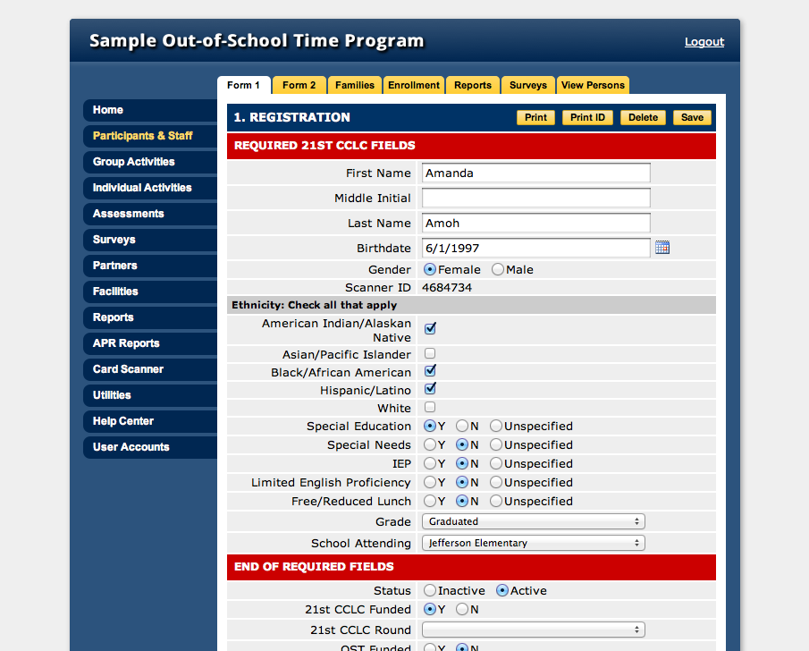

YouthServices.net
Youthservices.net is a web-based attendance tracking tool used by providers of youth service programs, such as non-profit organizations and school districts. As a class project for Info 213 – User Interface Design and Development, my partner and I reconsidered the entire user experience of the system by utilizing a user centered design process. We started with contextual inquiries, personas, tasks, and affinity diagrams, then moved on to paper prototyping, Balsamiq prototypes, and finally ended with an interactive prototype. We conducted usability tests along the way to optimize key tasks. Feedback from users during and after the tests was positive. The usability testing allowed us to pinpoint the successes and flaws of the new prototype. Overall, the participants were satisfied with the new prototype more than the original site. Read the full report here.
After the class ended I worked for youthservices.net implementing our findings, but was unable to implement all of the suggested improvements due to time constraints. One of my main tasks became modernizing the site’s front-end architecture, which was over 10 years old and relied on tables and images to function. This was especially problematic because all form buttons, navigation, and various other pieces of the application were trapped in images but also customized for each client, which made changing them a time-consuming hassle. Furthermore, the page load time was affected by the high number of HTTP requests and images required for the site to function. I converted the entire’s site’s layout to use DIVs and CSS, as well as replaced all images with dynamically-generated content styled with CSS. This reduced HTTP requests by over 50%, reduced server load, increased page rendering speed, and freed employees from having to create and update images for every client.